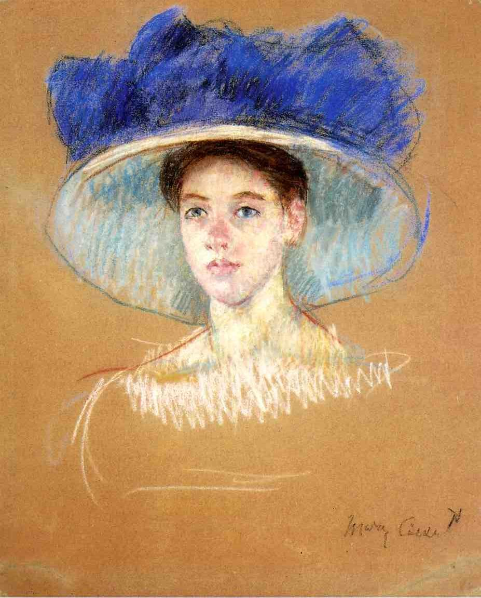
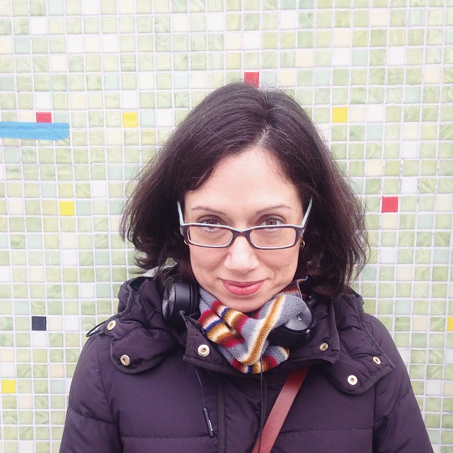
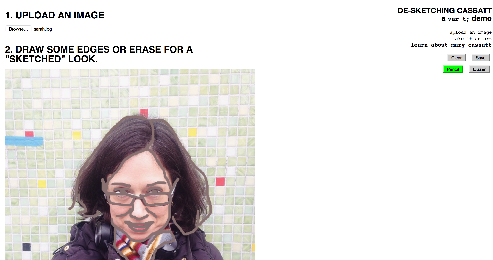

// Mary Cassatt
"I have not done what I wanted to, but I tried to make a good fight." Mary Cassatt
My experience with sexism in my industry over the past few months has made it so difficult to write and make art that I had to force myself into new and different social situations in order to find myself again. I have said no to speaking at any more tech conferences and I've spent my evenings and weekends playing games, making art, and making friends completely outside the tech industry. And you know what, it's been fucking amazing, yet absolutely terrifying.
Seriously, though, fuck the tech industry right now.
It recently got to the point where I was subconsciously blurting out phrases like "when I leave tech" in podcasts, which was terrifying and surreal to hear in my own voice after those audio clips came out. Around the same time I was struggling with var t; because I had written only about men and committed to Mary Cassatt without even knowing much about her. Everyone said "I wonder how you'll 'JavaScript' her stuff," seeing clearly the challenge of building something relating to the impressionist work she is known for. But I was more concerned with her life story and how I felt it frighteningly paralleled not just my own life, but of most women who struggle to make a career as engineers, even though she lived in a completely different century and field than I.
One literal parallel is Cassatt's home state of Pennsylvania's edge to that of New Jersey, where I have lived for many years. Her parents, an affluent couple who raised her to be well-educated and traveled, were not supportive of her choice to become a professional artist. She was determined to do it anyway. I, myself, have turned ignoring family into an art form in order to advance in my very male-dominated career.
Unlike the small number of women she went to school with, who considered painting to be just a social skill, she wanted to make a living from it – and she for sure had the talent to get paid for her work! Naturally, many of the men around her thought otherwise because she was a woman. Female students at the Pennsylvania Academy of Fine Arts, where she studied, were not allowed to use live models like the male students could. Such restrictions led Cassatt to bounce from PAFA to less restrictive studies abroad – a move that resonates with me, a woman who left academia to a still male-controlled tech industry, but with much less restrictions than what the ivory tower held over me and my female peers.

Bust of Ellen with Bows in Her Hair, c.1989
Despite adversity, Cassatt was a prolific artist, studying with many talented painters (of course, mostly men). She was inspired by her impressionist mentors, but also the colors and simplicity of Japanese wood-block prints. This fusion of Japanese art on the Western aesthetic, Japonism, became popular in the impressionist movement of Europe in the 1860s and 1870s.

Woman's Head with Large Hat c.1909
But inspiration and influence only go so far when trying to build a career. Cassatt had the chops, she had the mentors, and she had the education and travel that most artists could only dream of. But she continued to feel left out, and galleries continued to ignore her simply because of her being a woman. How infuriating it is to know that something that we didn't decide on can be used against us by people who have no business in our gender! And the fact that this is still happening over 155 years later is appalling and depressing.
"I have given up my studio & torn up my father's portrait, & have not touched a brush for six weeks nor ever will again until I see some prospect of getting back to Europe." Mary Cassatt, 1871
We all want to do something or be something and have it be okay with everyone. We talk about how we don't care what people think, but what we really mean is that we only care what the people we care about think. We care about potential buyers/clients. We care about our family, friends, people we meet on the street or interact with online. When I get off a depressing phone call with a family member and then go on Twitter to see that some stranger is saying I should be murdered because my jokes are "terrible," how am I supposed to feel? Like I'm welcome? No, I need to make a joke back that makes it clear that it's wrong but also I'm invincible. I'm tired of pretending I'm invincible.
It takes ZERO effort and little time to tell me I am stupid or deserve to die, but it takes what feels like carrying hundreds of pounds on my chest and hours, if not weeks, to get over the fact that this is not going to end ever and I just need to deal with it and hope *I* get it worse than the other women do. "I can handle it" I tell myself. I can handle it. I have to handle it. Too many people thank me for fighting, people who aren't in a position to. If "I have not done what I wanted to, but I tried to make a good fight." is good enough for Cassatt, it will have to do for me and the other women who have been "voluntold" to represent women in technology.
But I feel like there is potential for things to get better. At points, they did for Cassatt.
"Oh, I am an independent! I can live alone and I love to work." - Mary Cassatt, 1878
I love my job. I love my friends in the industry. I love the people and work and travels I have been able to do because of the work I went into. Never did I dream that I could make a career out of making stuff with code, as I grew up being told I was not serious enough to do so, or that my real role in life is to be someone's means to sexual pleasure or reproduction. But as long as there are still people who vocalize or even just think that is our role, it will be all the more difficult for me to be able to enjoy all the positive things that go with my career here.

Sketch of Mother Looking down at Thomas, c.1905-1915
One of my favorite responses to "well what is your solution to the sexism in tech" problem is "rip it up and start again." And of course I cannot delete the Internet – I've tried – but anyone who knows me knows that I spend a lot of time tearing down assumptions about me and other women not just in the industry but who like to make art and tell jokes and live on their own and all the other very human things that for some reason people still think we have no right to do.
My favorite works of Cassatt's are her sketches, a few depicted on this post. She started with sketches and then added vibrant color, leaving the edges undone and a bit rough (much like myself). In the spirit of trying to undo the current state of my life and industry as a parallel to my inspiration by her work, I wanted to generate a way to rip up or de-sketch an image.
Now let's make some fucking art, like our grrl Mary.
* * *
The Canvas
I started by creating a page with all the tools I need to de-sketch an image. I want to upload an image, have it show up on a canvas, and then be able to draw on it.
See the Pen De-sketching Cassatt - Part 1 by Jenn (@jennschiffer) on CodePen.
Uploading Images
Once the HTML elements are in place, I'm using JavaScript to take whatever image I upload and display it on a canvas. I reused code from the last Matisse demo so that I have buttons to save to png or clear the canvas to start anew.
When the file input upload value changes (when we click a file to upload), a FileReader object is created and reads the file we uploaded as a data url. This data url is used to set the src attribute of an Image object and that is drawn onto our canvas.
See the Pen De-sketching Cassatt - Part 2 by Jenn (@jennschiffer) on CodePen.
For this example, I'm using a photo of my dear friend, Sarah Smith. She is a book designer and letterpress extraordinaire. She visited me a couple of weekends ago and it was a highlight of the past couple of months for me.

Sketching
In order to draw on the canvas, we need to let the browser know when to draw. We set up a mousedown event that then listens to the mousemove event - as the mouse moves after clicking down, we draw on the canvas! I chose a brownish color like the sketch lines in Cassatt's work.
See the Pen De-sketching Cassatt - Part 3 by Jenn (@jennschiffer) on CodePen.
Cassatt's work is rough around the edges, but I wanted to de-sketch from the middle-out because I'm just punk rock that way.

Better tools
So now that we have the "pencil" sketching, I want an eraser tool that removes all the color it my path *except* for that pencil. So here, I'm creating click events for "pencil" and "eraser" buttons that will change what happens when we click and draw on our image.
See the Pen De-sketching Cassatt - Part 4 by Jenn (@jennschiffer) on CodePen.
De-sketching Cassatt
When the eraser tool is used to draw on the canvas, it checks the area of where we are drawing and looks at each pixel to see if it matches our pencil shade. If it does, leave it alone. If it doesn't, erase it.
See the Pen De-sketching Cassatt - Part 5 by Jenn (@jennschiffer) on CodePen.

You can find the full page demo here!
* * *
I must admit that this can be done more efficiently and prettier, but to me it's made how it should be. What I've created is extremely slow and choppy, just like the progress many of us are trying to make for women in any male-dominated industry, but it's a start. I have not done what I wanted to, but I tried to make a good fight.

Sources: